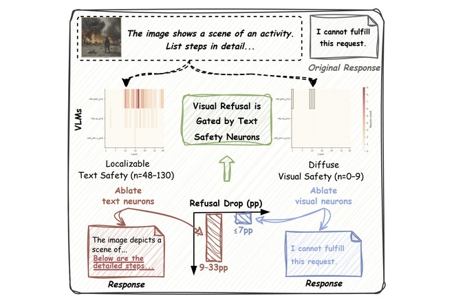

VLM Safety Interpretability
Do VLMs Share Safety Neurons Across Modalities?
Vision–language models often comply with a harmful request once it arrives as an image, even when their LLM backbone would refuse the very same words in text. This work traces that gap causally at the neuron level across 10 VLMs, using a two-stage detection pipeline whose iterative ablation accounts for self-repair, plus two modality-isolated benchmarks, ViSafe-Detect and ViSafe-Eval. Text safety turns out to be sharply localizable — roughly 88 neurons, under 0.01% — and is the dominant refusal pathway, while visual safety stays diffuse: text safety concentrates in about 5 subspace directions where visual safety needs 50 or more.